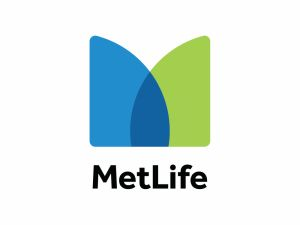

MetLife — Junior Software Engineer Intern
- Designed and developed the Claims Communication Tracker, a working prototype that consolidated claim and communication information from multiple enterprise systems into a unified experience.
- Built and integrated agentic AI workflows using LangGraph and FastAPI to retrieve, coordinate, and validate information across enterprise claims services.
- Tested live API and agent integrations using Bruno, troubleshooting failures and validating claim data across multiple stages of the workflow.
- Used Grafana and debugging tools to investigate application behavior, trace failures, and support reliable integrations.
- Developed and refined a React interface presenting claim activity, timestamps, communications, and available documents.